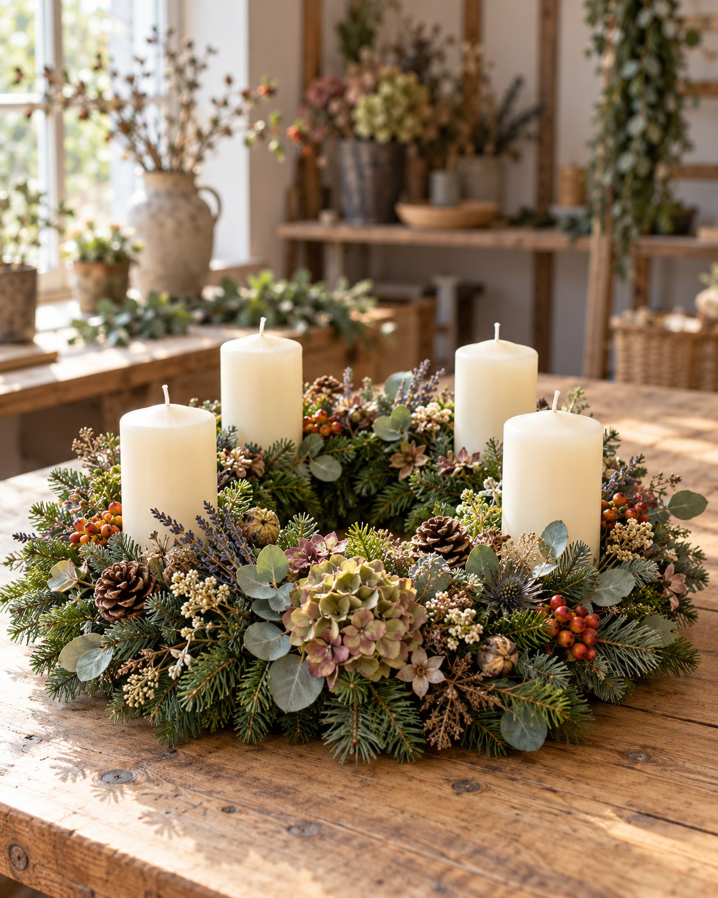

Advents-Workshop in Berlin
Adventskranz gestalten
Dein Advent beginnt selbstgemacht: Binde und gestalte Deinen persönlichen opulenten Adventskranz und stimme Dich entspannt auf die Weihnachtszeit ein.
- Termine
- AusgebuchtPlätze frei
- Preis
- 69 €
- Ort
- Ulme 35, Berlin-Charlottenburg
- Gruppe
- Maximal 10 Personen je Termin

Das erwartet Dich
Ein Adventskranz, der wirklich zu Dir passt.
Du bindest den Kranz von Grund auf und gestaltest ihn mit ausgewählten Naturmaterialien, Kerzen und Details nach Deinem Geschmack.
- Tannengrün und Kranzbasis
- Kerzen und Dekormaterial
- Persönliche Anleitung
- Snacks und infused water